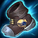
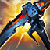
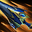
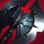
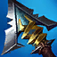
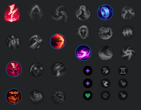

PANTHEON MID LANE







Do szóstego itemu raczej nie powinno dojść, ale jeśli już dojdzie, to jest to kwestia preferencji. Wcześniej można również budować Serpent’s Fang i Edge of Night w zależności od matchupu.
